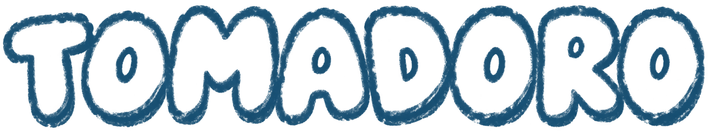

토마토와 함께,
내 속도로 집중해요.
토마토를 돌려 시간을 맞추고, 집중을 마칠 때마다
오늘의 토마토를 하나씩 모아요.
가볍게 시작하는 집중 루틴
- 돌려서 맞추는 타이머크레파스 토마토를 좌우로 밀어 집중 시간을 설정해요. 짧은 휴식과 긴 휴식도 내 리듬에 맞출 수 있어요.
- 홈 화면 위젯작은 위젯과 중간 위젯에서 시간을 조절하고 타이머를 시작·멈춤·재개해요.
- 오늘의 수확하루 목표를 정하고 완료한 집중 시간을 월별 달력에서 돌아봐요.
- 기록은 내 기기에로그인 없이 시작해요. 집중 기록과 타이머 설정은 iPhone 안에 저장돼요.
iOS 17 이상에서 사용할 수 있어요. 무료 이용에는 기록 화면 배너 광고가 있으며, 광고 제거는 한 번 구매하는 앱 내 구입으로 제공할 예정이에요. 타이머와 위젯에는 광고가 없어요.